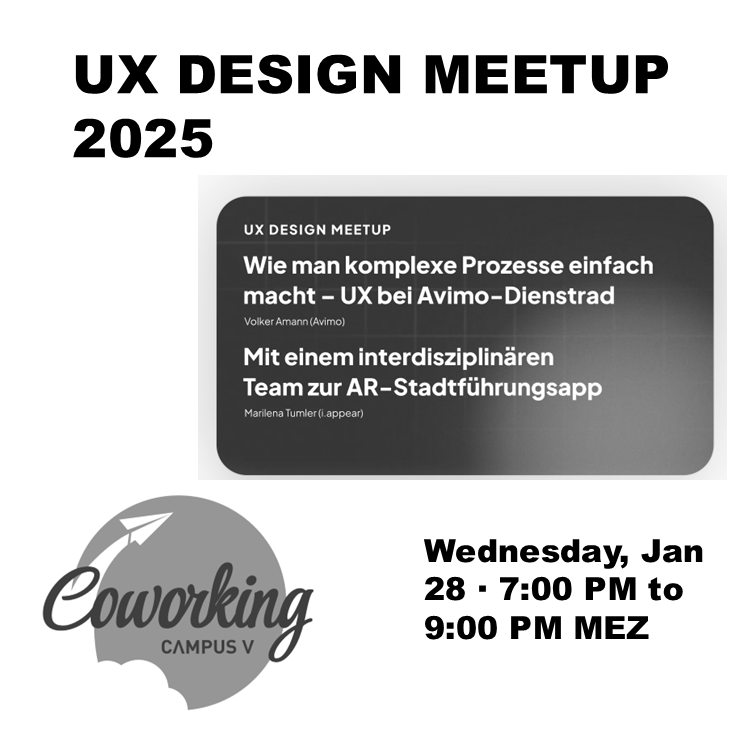

Am 28. Jänner 2026 präsentierte Marilena Tumler den Entwicklungsprozess von i.appear beim UX Design Meetup Vorarlberg. Die Veranstaltung fand von 19 bis 21 Uhr im Campus V Coworking in Dornbirn statt.
Von den Anfängen bis heute
Der Vortrag zeichnete den gesamten Entwicklungsweg von i.appear nach: von den frühen Prototypen über wissenschaftliche UX-Evaluierungen bis zum heutigen System. Besonders spannend: die Einblicke in die iterativen Designprozesse und die Erkenntnisse aus den Nutzertests.
Interdisziplinäres Team
Ein zentrales Thema war die interdisziplinäre Zusammenarbeit. Am Projekt wirken Historiker:innen, Archivar:innen, Pädagog:innen, Künstler:innen, Schauspieler:innen, Politiker:innen, Programmierer:innen, 3D-Künstler:innen und Designer:innen mit. Diese Vielfalt macht i.appear aus – und stellt gleichzeitig besondere Anforderungen an das UX-Design.
Das Meetup
17 Teilnehmer:innen waren vor Ort. Der Eintritt war frei. Das UX Design Meetup Vorarlberg bietet regelmaessig eine Plattform für den Austausch über nutzerzentriertes Design in der Region.